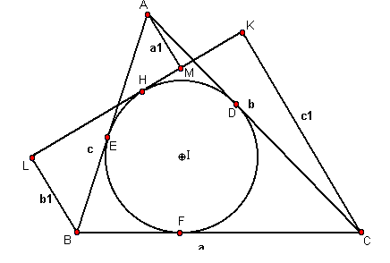
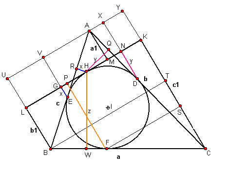

Dado ABC con I como incentro, a través de un punto H de la circunferencia inscrita del arco más pequeño cercano a A, se traza una tangente t a la circunferencia inscrita.
Desde A, B y C se trazan perpendiculares a t, que la cortarán en M,L y K respectivamente.
Sean AM=a1, BL=b1, CK=c1, BC=a, AC=b, AB=c, y S el área de ABC.
Demostrar que: S= (-a *a1+b*b1+c*c1)/2.
F. G.-M.(1991): Exercices de GéométrieEditor: Jacques Gabay (Reprint of A.Mame et Fils, Tours) Paris ( p. 750 )
Solución de Juan Carlos Salazar, Profesor de Geometría del Equipo Olímpico de Venezuela.(Puerto Ordaz) (Para publicarse en Forum Geometricorum)

Constuyamos UB//VE//PF//AM//XD//YC
UY//LK//BT//FS.
HQ perpendicular a AC, HR a AB, DN a LK y EG a LK.
También, EG=HR=x, HR=DN=y, HW =FP=z y
p= 1/2 (a+b+c).
Es: AM =UL=VG=XN=YK=a1, CT=c1-b1 y CS=c1-z.
Además, Area ABC=Area AHB+Area AHC + Area BHC
Area ABC = 1/2 AB HR + 1/2 AC HQ + 1/2 BC HW
Area ABC = 1/2 c x + 1/2 b y + 1/2 a z (1)

Por triángulos semejantes, es:
AEV - ABU EV/BU = AE/AB, luego es (x+a1)/(a1+b1)=(p-a)/c, y =(p-a)(a1+b1)/c-a1 (2)
ADX - ACY DX/CY=AD/AC, luego es (y+a1)/(a1+c1)=(p-a)/b, y=(p-a)(a1+c1)/b -a1(3)
CFS - CBT CS/CT=FC/BC, luego es (c1-z)/(c1-b1)= (p-c)/a, z= (p-c)(c1-a1)/a. (4)
Llevando a (1) las expresiones (2), (3) y (4), queda:
Area ABC = 1/2 c [(p-a)(a1+b1)/c - a1]+ 1/2 b [(p-a)(a1+b1))/(c-a1)]+ 1/2 a [c1-(p-c)(c1-a1)/a]
Simplificando:Area ABC = (-a a1 + b b1 + c c1)/2, cqd